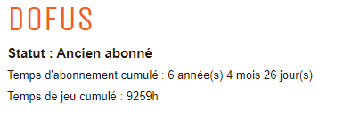

Welcome to Dofoustous
To acces all the tutorials of this website
{% block Body %}{% endblock %} {% block MainTemplate %}About the website
Hello and welcome to my website, Dofoustous! Here, you can learn a lot about the best game in the world, Dofus. Many tutorials will be available soon to help all players, including starters or novice, to progress in their adventure and to achieve big things. Please notice that the website is a work in progress and some parts of the website will be released soon. Good game and have fun!
About me
For those who are interested me, I am a young programmer studying at Concordia University. I am still a freshman but I plan to start big projects in the future. To begin with, I thought that programming a website about my favorite video game would be a good starting point. As you can notice it, I am a big fan of Dofus. As you can see in the following picture, I played this game for more than 9000 hours!

I started playing this game in late 2008. Back in the days, PCs were not that powerful and games like Dofus were very popular for their accessibility. After 11 years of experience, I can now feel comfortable enough to be able to guide players in this game. In this game, I played all the different game modes: heroique, Dofus Touch (mobile), Dofus 1.29, Dofus Officiel but even after playing all these modes, I still prefer the 1.29 version. It is the version of my childhood and I really appreciate it even if the graphic designs are not that great.
Thus said, I hope you will have good experience visiting my website. GL and HF!

{% endblock %}